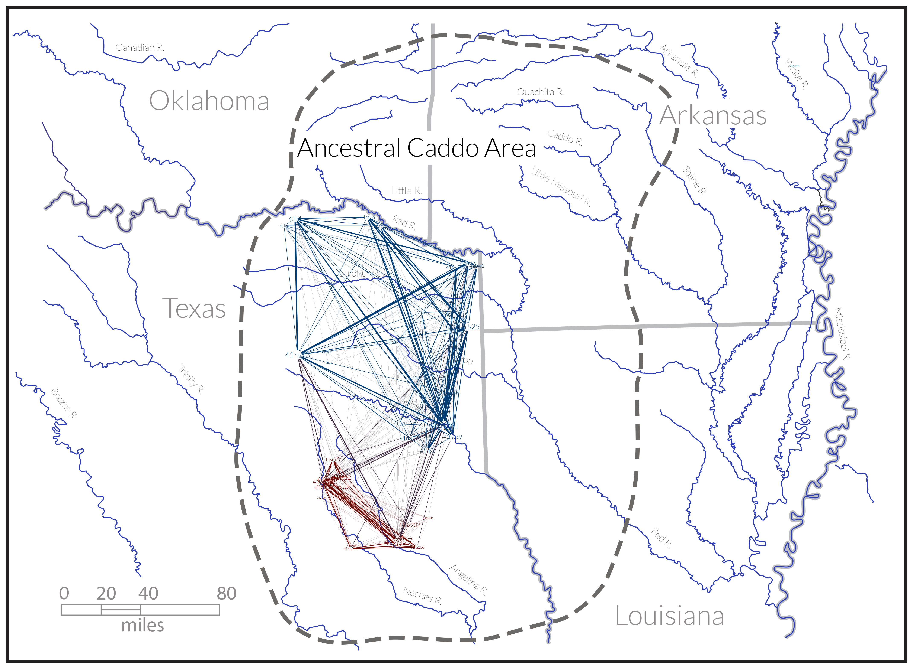
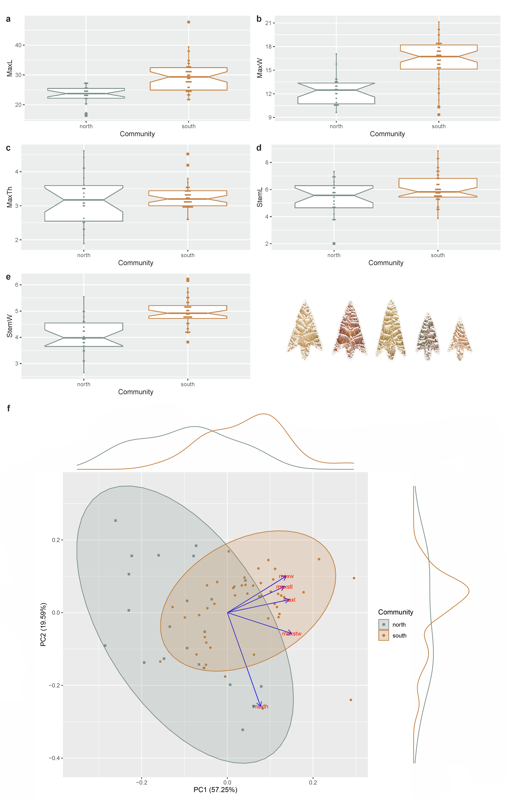
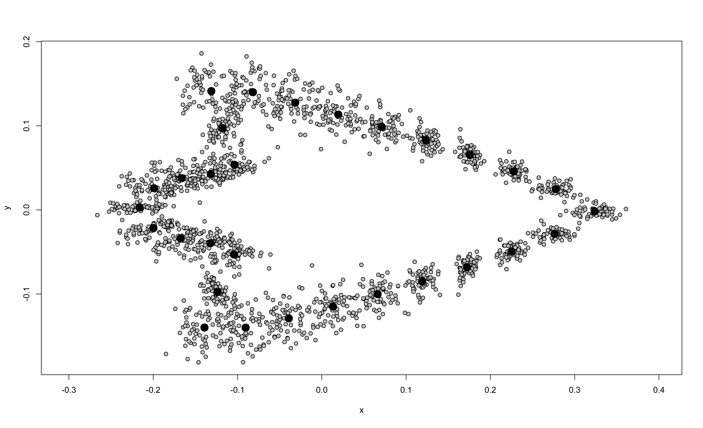

Perdiz arrow points from Caddo burial contexts aid in defining discrete behavioral regions
Abstract
Recent research into Caddo bottle and biface morphology yielded evidence for two distinct behavioral regions, across which material culture from Caddo burials expresses significant morphological differences. This study asks whether Perdiz arrow points from Caddo burials differ across the same geography, which would extend the pattern of morphological differences to a third category of Caddo material culture. Perdiz arrow points collected from the geographies of the northern and southern Caddo behavioral regions were employed to test the hypothesis that morphological attributes differ, and are predictable, between the two communities. The analysis of linear metrics indicated a significant difference in morphology by behavioral region. Using the linear metrics combined with the tools of machine learning, a predictive model—support vector machine—was designed to assess the degree to which community differences could be predicted, achieving a receiver operator curve score of 97 percent, and an accuracy score of 94 percent. The subsequent landmark geometric morphometric analysis identified significant differences in Perdiz arrow point shape and size between the behavioral regions—one characterized by a comparatively smaller blade and larger stem (north), and the other by a comparatively larger blade and smaller stem (south)—coupled with significant results for modularity and morphological integration. These findings build directly upon recent investigations that posited two discrete Caddo behavioral regions defined on the basis of discernible morphological differences, which is expanded here to include a third category of Caddo material culture.
Introduction
Perdiz arrow points are considered the epitome of the Late Prehistoric Toyah lithic assemblage in Texas—which also includes convex end scrapers or unifaces, prismatic blades, as well as two- and four-beveled bifacial knives—and are representative of the Late Prehistoric transition to the Protohistoric . This technological assemblage is typically attributed to groups of highly mobile bison hunters, and has been documented across the geographic extent of Texas. Our present understanding of the Toyah tool kit indicates that it was successfully implemented in a broad-spectrum of hunting and foraging lifeways that included not only bison (Bison bison), but deer (Odocoileus spp.) and numerous other animal prey species .
The Toyah tool kit has been recognized as a potential contributor to discussions of Late Prehistoric social and cultural identity. Initially identified by J. Charles Kelley on the basis of technological and morphological differences in material culture, the Toyah Phase (CE 1300 - 1700) occurred between the Protohistoric and the preceding Austin Phase of the Late Prehistoric Period . As noted by Arnn:
Toyah represents something of a paradox in which archaeologists have identified one archaeological or material culture in the same region where historians have documented numerous Native American groups and significant cultural diversity .
Stemming from the observations of Kelley, as well as later researchers who viewed Toyah as a cultural entity, technological origins became a point of further interest and debate from which two schools of thought emerged regarding Toyah cultural manifestations: 1) that Toyah represented the technology of Plains groups moving into Texas following the bison herds , or 2) a technocomplex or suite of artifacts adopted by multiple groups across Texas as they participated in bison hunting . In both interpretations, primary agency is environmental ; either people followed the bison from elsewhere, or the influx of bison spurred adoption of the technology among the numerous groups in Texas.
Research by Arnn emphasized aspects of Toyah social identity, social fields, and agency, as well as the archaeological visibility of these phenomena. Arnn recognized three important scales of identity and interaction in his work: community/band, marriage/linguistic group, and long-distance social networks . His ideas are important here because they supplant a simple monocausal environmental explanation of material culture variability with a multi-causal and scaled concept that includes social identity.
Perdiz arrow points
Perdiz arrow points generally follow two manufacturing trajectories; one that enlists flakes, and the other, blade flakes , and are known to encompass a greater range of variation in shape and size than most arrow point types in Texas . Lithic tool stone in the ancestral Caddo area of northeast Texas is relatively sparse , consists primarily of chert, quartzite, and silicified wood characteristic of the local geological formations, which may contribute to local variation in shape and size . It has been demonstrated elsewhere that morphological attributes of Perdiz arrow points from northeast Texas vary significantly by time, raw material, and burial context . In outline, Perdiz arrow points possess a:
[t]riangular blade with edges usually quite straight but sometimes slightly convex or concave. Shoulders sometimes at right angles to stem but usually well barbed. Stem contracted, often quite sharp at base, but may be somewhat rounded. Occasionally, specimen may be worked on one face only or mainly on one face … [w]orkmanship generally good, sometimes exceedingly fine with minutely serrated blade edges .
A social network analysis of diagnostic artifacts from Historic Caddo (post-CE 1680) sites in northeast Texas demonstrated two spatially discrete behavioral regions based on the co-presence of diagnostic types . The network analysis was limited to Historic Caddo types; however, Formative/Early Caddo (CE 800 – 1200) Gahagan bifaces and Caddo bottle types have been found to express significant morphological differences across the same spatial extent as the behavioral regions , extending the prehistoric longevity for the behavioral regions based on local alterity. Gahagan bifaces from the ancestral Caddo area also differ significantly in shape, size, and form compared with those recovered from central Texas sites , suggesting a second shape boundary between the ancestral Caddo area and central Texas.
The goal of this exploratory endeavor was to assess whether metrics collected for Perdiz arrow points support the shape boundary posited in recent social network and geometric morphometric analyses, to determine whether linear metrics and shape variables might be useful predictors of regional membership, and—if so—to identify those morphological features that articulate with each behavioral region. Should the analysis yield significant results, it would bolster the argument for at least two discrete Caddo behavioral regions in northeast Texas; each empirically defined by discernible morphological differences across three discrete categories of Caddo material culture (Figure \(\ref{fig:fig1}\)).
Caddo behavioral regions
In a June 18, 1937 Works Progress Administration interview with Lillian Cassaway, Sadie Bedoka—a Caddo-Delaware woman raised with the Caddo—stated that:
Each [Caddo] clan had its own shape to make its pottery. One clan never thought of making anything the same pattern of another clan. You could tell who made the pottery by the shape .
General differences in Caddo ceramic forms have been noted elsewhere ; however, the study of the Clarence H. Webb collection was the first to illustrate a significant north-south geographic shape difference among Hickory Engraved and Smithport Plain Caddo bottle types . That preliminary observation was later confirmed using more robust samples of Hickory Engraved and Smithport Plain bottles , then expanded to include a greater variety of Caddo bottle types across a larger spatial and temporal extent .
The co-presence of diagnostic artifact and attribute types has been used to define Caddo phases and periods, which serve as a heuristic tool that aids archaeologists in explaining the local cultural landscape, as well as regional differences between local landscapes. The Historic Caddo network expands those efforts, augmenting the previously-defined phases and periods, and emphasizing the dynamic and manifold relational connections that reinforce and transcend the currently-defined categories . This was achieved by enlisting a multi-scalar methodological approach , where northern and southern communities were parsed into constituent groups using the co-presence of diagnostic types paired with a modularity algorithm . Most of the constituent groups identified in the network analysis were found to articulate with known Caddo polities .
A subsequent analysis of Gahagan bifaces confirmed that a second category of Caddo material culture expressed significant morphological differences across the same geography as the Hickory Engraved and Smithport Plain bottles . The morphology of Gahagan bifaces from sites in central Texas was also found to differ significantly from those recovered from the Caddo region . That Gahagan bifaces were found to differ across two spatial boundaries was noteworthy, particularly since it has regularly been assumed that these large bifaces were manufactured in central Texas and arrived in the ancestral Caddo area as products of trade and/or exchange . Further, that Gahagan bifaces were found to differ across the same geography as those communities posited in the Historic Caddo network analysis suggested that the temporal range of the shape boundary might extend to the Formative/Early Caddo period (CE 800 - 1250); a hypothesis that was later confirmed in a more comprehensive analysis of Caddo bottles .
Methods and results
Sixty seven whole/intact Perdiz arrow points recovered from Caddo burial contexts in Camp, Nacogdoches, and Shelby counties comprise the basis of this study (supplementary materials). A standard suite of linear metrics were collected for each specimen, including maximum length, width, thickness, stem length, and stem width. Following collection, data were imported to R , where boxplots were produced, along with a principal components analysis (PCA), followed by a permutational multivariate analysis of variance (perMANOVA) to test whether the morphology of Perdiz arrow points differs between the behavioral regions (supplementary materials).
Boxplots illustrate the distribution and mean for each of the five linear variables (Figure \(\ref{fig:fig2}\)a-e), and the PCA (Figure \(\ref{fig:fig2}\)f) illustrates over 92 percent of the variation in the sample among PC1 (84.65 percent) and PC2 (11.71 percent). The perMANOVA demonstrated that linear metrics for Perdiz arrow points differ significantly by behavioral region (permutations = 10,000; Rsq = 0.29485; Pr(>F) = 1e-04) (supplementary materials).

Predictive model
A support vector machine is a supervised machine learning model regularly used in classifying archaeological materials , which has utility in comparing and classifying datasets aggregated from digital repositories, comparative collections, open access reports, as well as other digital assets. For this effort, linear data were imported and modeled using the scikit-learn package in Python (supplementary materials), and subsequently split into training (75 percent) and testing (25 percent) subsets. A standard scaler was used to decrease the sensitivity of the algorithm to outliers by standardizing features, and a nested cross validation of the training set was used to achieve unbiased estimates of model performance, resulting in a mean cross validation score of 86 percent (supplementary materials). The model was subsequently fit on the training set, yielding a receiver operator curve score of 97 percent, and an accuracy score of 94 percent (supplementary materials).
Geometric morphometrics
Each of the arrow points was imaged using a flatbed scanner (HP Scanjet G4050) at 600 dpi. The landmarking protocol developed for this study (supplementary materials) included six landmarks and 24 equidistant semilandmarks to characterize Perdiz arrow point shape, and were applied using the StereoMorph package in R . The characteristic points and tangents used in the landmarking protocol were inspired by the work of Birkhoff .
Landmarks were aligned to a global coordinate system , achieved through generalized Procrustes superimposition , performed in R 4.1.1 using the geomorph package v4.0.1 (Figure \(\ref{fig:fig3}\)). Procrustes superimposition translates, scales, and rotates the coordinate data allowing for comparisons among objects . The geomorph package uses a partial Procrustes superimposition that projects the aligned specimens into tangent space subsequent to alignment in preparation for the use of multivariate methods that assume linear space .

Principal components analysis was used to visualize shape variation among the arrow points (Figure \(\ref{fig:fig4}\)). Shape changes described by each principal axis are commonly visualized using thin-plate spline warping of a reference image or 3D mesh . A residual randomization permutation procedure (RRPP; n = 10,000 permutations) was used for all Procrustes ANOVAs , which has higher statistical power and a greater ability to identify patterns in the data should they be present . To assess whether shape differs by group (region), Procrustes ANOVAs were also run that enlist effect-sizes (z-scores) computed as standard deviates of the generated sampling distributions . Procrustes variance was used to discriminate between regions and compare the amount of shape variation (morphological disparity) , estimated as Procrustes variance using residuals of linear model fit . A pairwise comparison of morphological integration was used to test the strength of integration between blade and basal morphology using a z-score .

The analysis of modularity, which compares within-module covariation of landmarks against between-module covariation was significant (see Figure \(\ref{fig:fig4}\) and supplementary materials) , demonstrating that Perdiz arrow point blades and bases are, in fact, modular. The test for morphological integration was also significant (see Figure \(\ref{fig:fig4}\) and supplementary materials), indicating that the blades and bases of Perdiz arrow points are integrated. These results demonstrate that blade and base shapes for Perdiz arrow points are predictable; a finding that would have utility in subsequent studies of Perdiz arrow point morphology that incorporate fragmentary specimens.
A Procrustes ANOVA was used to test for a difference in Perdiz arrow point (centroid) size by behavioral region (RRPP = 10,000; Rsq = 0.30681; Pr(>F) = 1e-04), followed by a second to test for a difference in arrow point shape (RRPP = 10,000; Rsq = 0.0536; Pr(>F) = 0.0161). While shape and size differ significantly between behavioral regions, the Rsq value for size is just under six times larger than that for shape (smaller in the north; larger in the south), suggesting that between-region differences in Perdiz arrow point size may be more visually apparent than differences in shape. A comparison of mean consensus configurations was used to illustrate shape differences from the northern and southern behavioral regions. Diacritical morphology is characterized by a comparatively smaller blade and larger stem in the north, and by a comparatively larger blade and smaller stem in the south. Further, the angle between the shoulder and base is more acute, with a base that is generally shorter and narrower in the southern behavioral region (supplementary materials).
Discussion
The shape boundary empirically delineates two discrete behavioral regions in the ancestral Caddo area. That the Perdiz arrow points recovered from Caddo burials north and south of the shape boundary were found to differ significantly, expands the scope of the behavioral regions to include three classes of artifacts (Caddo bottles, bifaces, and—now—arrow points) . For material culture included in burial contexts, the Caddo were selecting for significant morphological differences in bottles, bifaces, and arrow points recovered from either side of the shape boundary (Figure \(\ref{fig:fig6}\)a-d). Results clearly illustrate that morphological differences among Perdiz arrow points found in the northern and southern behavioral regions (Figure \(\ref{fig:fig6}\)d) are predictable (supplementary materials), and can be disaggregated using a standard suite of linear metrics regularly collected for cultural resource management endeavors.

The geometric morphometric analysis demonstrated significant morphological differences for Perdiz arrow points recovered north and south of the shape boundary, where the most pronounced difference was found to occur in basal morphology (see Figure \(\ref{fig:fig6}\)d). This finding provides evidence in support of the argument that Perdiz arrow point morphology is labile . The character of those morphological differences found to occur in Perdiz arrow points (basal morphology and size) is potentially suggestive of differential approaches to hafting.
Blades and bases of Perdiz arrow points were found to be both modular and morphologically integrated. This indicates that each module functions independently, and that basal shape is a predictor of blade shape, and vice-versa. Further work is warranted to assess whether Perdiz arrow points from groups within the boundaries of the northern and southern behavioral regions may express unique morphologies, aiding in further delimiting local boundaries associated with constituent Caddo groups.
Morphologically-distinct behavioral regions
In considering the role/s of artifacts as aspects of social identity, it is important not to lose sight of the fact that people and artifacts are active agents in the production and maintenance of social identity/ies. All three categories of artifacts (bottles, bifaces, and arrow points) contribute to local and regional communities of identity and communities of practice . Generally, this concept may be more easily applied to bottles since they were manufactured and used by individuals sharing collective Caddo identities. Bifaces and arrow points potentially represent multiple identities—those being the Caddo, as users; and non-Caddo, as producers—at least with regard to chipped stone tools incorporated in mortuary contexts. This concept lends defensible credence to the notion of morphologically-distinct behavioral regions among the Caddo, while integrating the possibility of understanding interactions between Caddo and non-Caddo groups, to include the movement of material culture between Caddo behavioral regions.
Three categories of Caddo material culture have been demonstrated to differ north and south of the shape boundary, indicating a haecceity of regional perspectives related to production (bottles), and aesthetic choice/cultural interaction (bifaces and arrow points). These differing perspectives incorporate group decisions that include shape, size, form, and decorative expression, which likely represent the culmination of generational perspectives . Simply stated, such perspectives are representative of tradition. Eckert and colleagues indicate that provenance, the origin or source of an item, is a significant component of understanding the interrelatedness of communities of identity and communities of practice. A second shape boundary demonstrates that Gahagan bifaces differ significantly between the ancestral Caddo region and central Texas, where they are currently thought to have been manufactured. This suggests that those communities of practice that articulate with the production of chipped stone artifacts recovered from Caddo internments, may not have been Caddo.
It is also entirely possible that there are no communities of practice at all for chipped stone artifacts recovered from Caddo mortuary contexts. However, there do appear to have been communities of practice associated with Perdiz arrow points recovered from non-mortuary contexts in the ancestral Caddo area, which may more readily reflect the retouch or resharpening approaches employed by Caddo knappers . Similar interpretations can be applied to Gahagan bifaces, as few have been reported outside of Caddo mortuary contexts. It may be more fitting to perceive of Perdiz arrow points and Gahagan bifaces as indicative of communities of identity rather than communities of practice, due to the contextual discrepancy evinced through mortuary and non-mortuary settings. The provenance of bifaces from Caddo mortuary contexts can most assuredly be considered non-local, or produced outside of the ancestral Caddo region, based on multiple factors that include raw material, workmanship, morphology, and context.
Conclusion
This study demonstrated that linear metrics and shape variables collected for Perdiz arrow points support the shape boundary posited in recent social network and geometric morphometric analyses, and determined that those same metrics can be used to predict regional membership. Morphological features that discriminate between Perdiz arrow points recovered from each behavioral region were identified using geometric morphometrics, with substantive differences found to occur in size and basal morphology. Blade and base shape were found to be both modular and morphologically integrated, suggesting that blade and base shapes are predictable. While evidence from one category—Caddo bottles—supports discussions of Caddo production, the other two—bifaces and arrow points—more readily articulate with production activities outside of the region by non-Caddo makers. Such production activity is more likely to be localized than exchange systems, thus assumed to leave a clearer signature . Further work is warranted to expand the scope of this research program to include analyses of differential production in the two behavioral regions using a greater diversity of diagnostic Caddo artifact types.
Acknowledgments
We extend our gratitude to the Caddo Nation of Oklahoma, the Caddo Nation Tribal Council, Tribal Chairman, and Tribal Historic Preservation Office for their continued guidance and support of our work, as well as access to NAGPRA and previously repatriated collections. Thanks also to the Anthropology and Archaeology Laboratory at Stephen F. Austin State University for the requisite permissions and access to the NAGPRA objects from the Washington Square Mound site and Turner collections, and to Tom A. Middlebrook for brokering access to the Perdiz arrow points from burials at the Morse Mound site. We wish to thank Michael J. Shott, Timothy K. Perttula, and Casey Wayne Riggs for their useful comments and constructive criticisms on a presubmission draft, and extend our gratitude to Emma Sherratt, Kersten Bergstrom, Lauren Butaric, Julien Claude, Dean C. Adams, and Michael L. Collyer for their constructive criticisms and suggestions throughout the development of this research program. Additional comments from the editor and three anonymous reviewers aided in further refining the manuscript.
Funding
Components of the analytical workflow were developed and funded by a Preservation Technology and Training grant (P14AP00138) to RZS from the National Center for Preservation Technology and Training, as well as grants to RZS from the Caddo Nation of Oklahoma, National Forests and Grasslands in Texas (15-PA-11081300-033) and the United States Forest Service (20-PA-11081300-074). Additional funding and logistical support was provided by the Heritage Research Center at Stephen F. Austin State University.
Data Management
The data and analysis code associated with this project can be accessed through the GitHub repository (https://github.com/seldenlab/perdiz3) or the supplementary materials (https://seldenlab.github.io/perdiz3/); which are digitally curated on the Open Science Framework (DOI: 10.17605/OSF.IO/VZHJR). Images of all Perdiz arrow points used in this study were made available in an open access comparative collection (https://scholarworks.sfasu.edu/ita-perdiz/), with permission from the Caddo Nation of Oklahoma. These supplementary materials include all analysis data and code used in the study, providing a means for others to reproduce (exactly) those results discussed and expounded upon in this article. The replicable nature of this undertaking provides others with the means to critically assess and evaluate the various analytical components of this study, which is a necessary requirement for the production of reliable knowledge .
Reproducibility projects in psychology and cancer biology are impacting current research practices across all domains. Examples of reproducible research are becoming more abundant in archaeology , and the next generation of archaeologists are learning those tools and methods needed to reproduce and/or replicate research results . Reproducible and replicable research work flows are often employed at the highest levels of humanities-based inquiries to mitigate concern or doubt regarding proper execution, and is of particular import should the results have—explicitly or implicitly—a major impact on scientific progress .